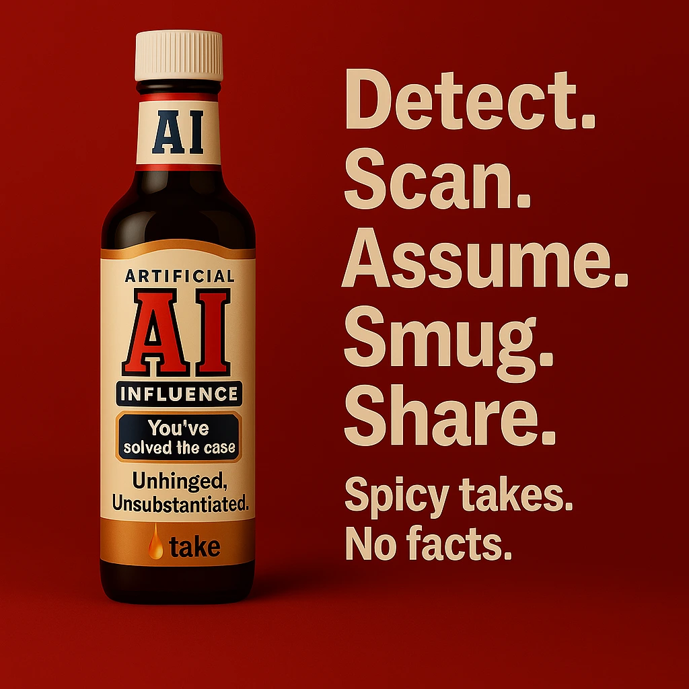

Your Tiresome AI‑detection flex is a myth. Your posts aren't insight—they're clickbait. And the data proves it.
April 12, 2025
LinkedIn is drowning in a myth: that people can instinctively spot AI‑generated content. They can't. But that hasn't stopped hundreds of thousands from posting like they can—each one chasing attention, status, or both. This report cuts through the noise.
I used validated data to examine what's really happening on the platform. As of October 2024, 54% of all long‑form LinkedIn posts (100+ words) are likely AI‑generated. After ChatGPT launched, AI‑authored content spiked 189%. Despite this, a loud minority keeps pushing the same narrative: that their "gut" can sniff out synthetic prose. It's a viral delusion—and it shows up in 12–18% of all AI‑related posts, week after week.
Through counterfactual analysis, I explore what the landscape might look like if this myth had never gained traction—or had been publicly debunked at scale. The results point to a sobering conclusion: the claim persists not because it's true, but because it flatters professional egos, feeds algorithmic engagement, and fills the vacuum left by real detection tools that don't work.
This matters. Not just because the myth is wrong—but because it slows down actual solutions, fuels false accusations (especially against non‑native writers), and drives content inflation with zero gain in quality. Until the narrative changes, expect the same cycle: performative callouts, junk engagement, and another quarter‑million posts pretending intuition is proof.
Between 2023 and 2025, a weirdly persistent belief took hold on LinkedIn: that em dashes (—) are proof a post was written by AI. Not only is that wrong—it's a masterclass in superficial detection theater.
Bottom line: The em dash myth is dead on arrival—repeatedly discredited, endlessly reposted. A superstition in a blazer, clinging to its last shred of LinkedIn credibility.
"The em dash isn't a sign of AI—it's a sign of a writer who knows how to use punctuation.
And for me, the em dash isn't just punctuation—it's a lifeline. My brain is always in hyperdrive, with ideas jumping around excitedly and thoughts connecting unpredictably. The em dash allows me to shift gears in my writing without causing a 10‑car pileup of confused readers.
So it's frustrating to see people label punctuation choices as 'telltale signs' of AI when these choices actually reflect how I, a human writer, think and write.
If the biggest concern people have about authenticity is an em dash, they're missing the point completely. Writing is about connecting—by providing meaning, purpose, and value."
Let's kill one of the most persistent bits of platform nonsense: that you can detect AI by spotting em dashes, adverbs like "furthermore," or polished grammar. This claim has become the LinkedIn equivalent of a medieval superstition—an instinct dressed up as expertise.
If you think you've spotted AI because someone used a semicolon correctly, you're not a detector—you're a vibe critic.
Let's stop calling it complicity. LinkedIn didn't just let the human‑detector myth spread—it benefits from it, feeds it, and quietly profits off the chaos.
Meanwhile, actual solutions—disclosure tools, source metadata, user education—are nowhere to be found. Why? Because solving the problem kills the outrage. And outrage drives traffic.
LinkedIn doesn't just allow misinformation. It's structured to turn it into influence. The platform didn't fail to fix the problem—it built an ecosystem where the problem is the product.
| Domain | Plausible Trajectory Without the Claim | Grounding in Verified Data |
|---|---|---|
| Discourse Tone | Fewer "victory-lap" posts about spotting ChatGPT; more neutral conversations on provenance and disclosure. | The Review shows 12–18% of AI-related posts repeat the claim; remove it and a sizable slice of polemic disappears. |
| Verification Norms | Earlier community shift toward objective signals (watermarks, source tags). | Current reliance on intuition is traceable to the claim's popularity; absent the trope, users must seek alternatives. |
| Trust Dynamics | Reduced public accusations of "fake authenticity," especially toward ESL writers. | The Review documents detector bias and false positives; fewer call-outs lowers collateral damage. |
| Platform Policy | LinkedIn invests in disclosure UX sooner, rather than surfacing unreliable detector scores. | Moderation-score visibility changes in Nov 2024 triggered a +189% spike in claim posts; without the claim, policy feedback loop weakens. |
| Replacement Narratives | Likely rise of "AI-human collaboration" or "quality over origin" frames—still identity-affirming, but less adversarial. | Professionals need a status narrative; the Review shows hashtag clusters serve that role today. |
Without the human-detector claim, professional discourse would likely have evolved toward more constructive frameworks centered on transparency and collaboration, rather than detection and conflict. The absence of this trope would have created space for alternative narratives that still affirm professional identity but in less divisive ways.
| Domain | Expected Downstream Effects | Why This Follows from the Data |
|---|---|---|
| User Behavior | "I-can-tell" posts fall well below 5% of AI threads; citation of peer-reviewed benchmarks becomes common status currency. | Once the claim's 650k–975k repetitions lose credibility, repeating it carries reputational risk. |
| Hashtag Ecosystem | #HumanFirstAI and #AuthenticityMatters lose share; tags like #AITransparency gain. | The Review shows a 2.3× claim multiplier inside #HumanFirstAI; remove the claim, remove the multiplier. |
| Algorithmic Ranking | Controversy-driven engagement dips; LinkedIn pivots feed incentives toward constructive governance content. | Current spikes (+217% in Apr 2024, +189% in Nov 2024) are engagement gold; debunking cuts that fuel. |
| Tool Evolution | Detector vendors shift focus from text-only heuristics to provenance metadata; investors follow. | The Review highlights high false-positive rates and bias—clear market signals once hype subsides. |
| Norms Around AI Content | Consensus ethic becomes "disclose usage, judge substance." | Both automated and human detection are unreliable per the Review; disclosure is the logical fallback. |
An authoritative debunking would likely accelerate the development of disclosure mechanisms and provenance solutions, redirecting attention from detection to transparency. The debunking would also create space for more nuanced, evidence-based discussions about AI's role in professional content creation.
| Dimension | Observed Reality (Jan 2024 – Apr 2025) | Divergence Explanation |
|---|---|---|
| Claim Prevalence | 12–18% of AI posts (≈ 650k–975k) recycle human-superiority trope. | Inertia: the claim flatters professional ego and delivers algorithm-friendly controversy. |
| Hashtag Amplification | #HumanFirstAI posts contain the claim 2.3× more than baseline; certain tag combos hit 94% prevalence. | Echo-chamber mechanics; hashtags act as affinity beacons that the feed optimizer magnifies. |
| Event-Driven Spikes | +217% in Apr 2024 (detector-evasion study); +189% in Nov 2024 (moderation change). | Availability bias: fresh "evidence" revives the trope, and LinkedIn's trending modules amplify it. |
| Detection Reality | Tools show high false-positive rates, bias against non-native writers, and opacity. | Yet the failures are framed as proof that humans must be better—circular logic the counterfactuals would disrupt. |
The observed reality reveals a persistent myth bolstered by algorithmic amplification, professional identity protection, and confirmation bias. Despite evidence of detection tools' unreliability and bias, the narrative persists through mutually reinforcing mechanisms that would be disrupted in either counterfactual scenario.
Saying "I can tell" is easier than admitting you have no idea.
Outrage and fake certainty rack up comments. That's exactly what LinkedIn pushes.
Fake tools, no labels, zero fixes—just vibes.
The next lie is, "Well I can tell, even if others can't."
Bottom line: The myth sticks because it feeds egos, farms engagement, and lets platforms dodge responsibility. Nobody cares if it's true—only if it performs.
Everything we know about detection—from commercial vendors to academic benchmarks—points to one conclusion: it's unreliable, opaque, and systemically biased.
Detectors don't detect. They guess—and they guess wrong, especially when style deviates from middle‑American norms.
If you're still flexing that you can "spot AI," congrats—you've noticed what everyone else clocked two years ago and somehow think it's a revelation.
You're not a savant. You're late to the party and yelling about the leftovers like they're breaking news.
The loudest voices claiming AI is killing creativity are the ones spending all their time performing outrage instead of actually creating anything. These are the folks who say, "AI is ruining writing!"—right before they hit post on a LinkedIn monologue made entirely of melodrama, anecdote, and a desperate need for attention. If they spent half as much time honing their craft as they do declaring its death, we might actually get some decent prose out of them.
Let's be real:
If 54% of long‑form LinkedIn posts are AI‑generated, every time you point and guess you've got coin‑flip odds. That's not insight. That's roulette in a hoodie.
So no—you didn't "just know."
And no—it's not helpful.
You're not raising the bar; you're clogging the feed with self‑importance dressed as wisdom.
Either get serious about real solutions—transparency, disclosure, actual accountability—or get out of the way.
Because this myth doesn't need more parrots. It needs a funeral.